Silent Hill f
Trois lectures d'une même réécriture : un journal qu'on récrit, une poupée qu'on fabrique pour absorber un sort, un village qui a volé son histoire à son propre dieu.

Umineko no naku koro ni
Quatre entrées dans le roman-fleuve de Ryukishi07, de la porte d'entrée pour nouveaux venus à la lecture dantesque.
-
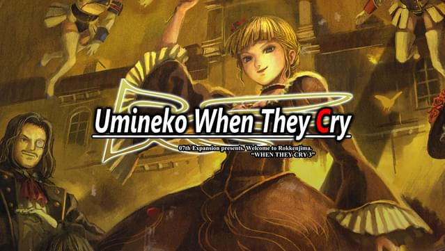
Pour les nouveaux venusIl était une fois une île dorée
La légende qu'on raconte aux enfants, avant de leur dire ce qui s'est vraiment passé.
10 min -
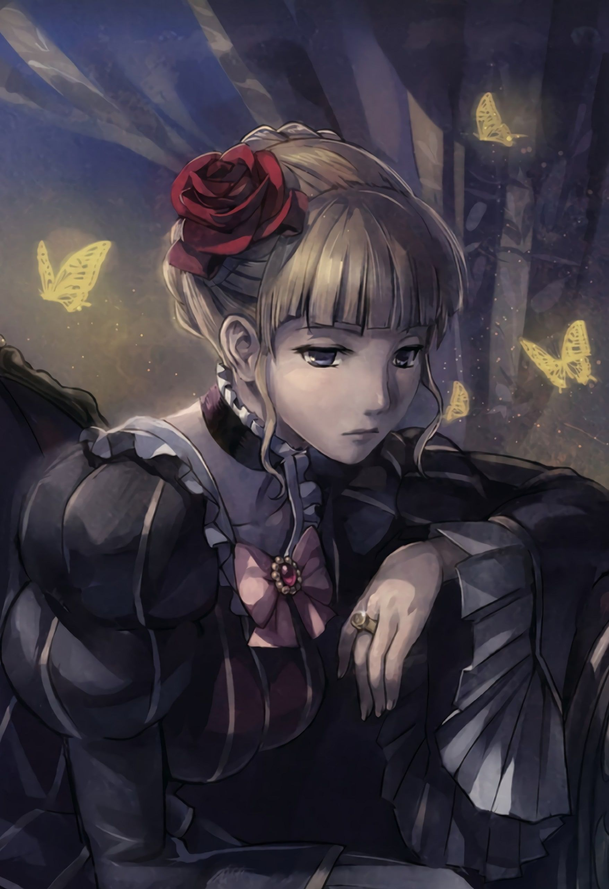
Diptyque I — féminismeLe mobilier a un cœur
Ceux qu'on prenait pour de simples meubles avaient un cœur, et il battait fort.
18 min -
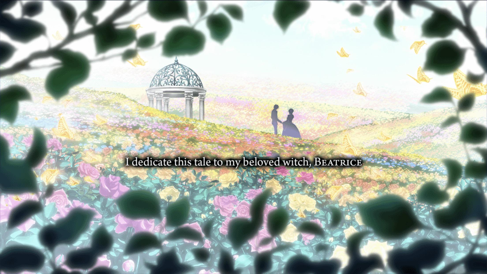
Diptyque II — magieSans amour, cela ne peut être vu
Il existe une vérité qu'on ne peut voir qu'en aimant assez fort pour la mériter.
16 min -
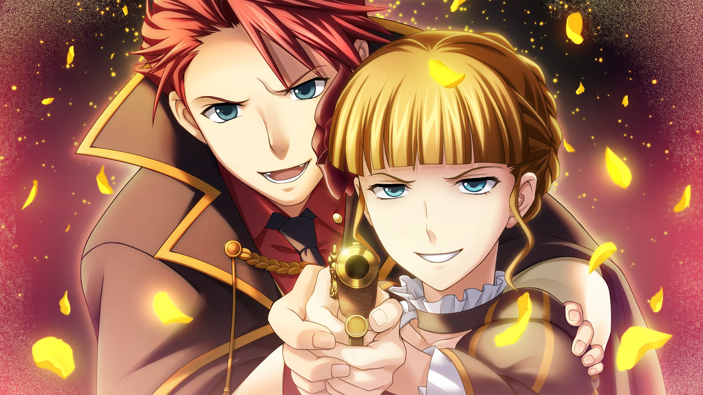
Divine ComédieUmineko comme Comédie
Sept siècles plus tard, Dante revient sous les traits d'une sorcière qui n'a pas pardonné.
18 min
Lectures transversales
Des textes qui traversent plusieurs œuvres pour isoler un dispositif commun — un geste de genre, une économie du sacrifice, une figure d'auteur.
-
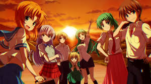
Portrait d'auteurLe monde de Ryukishi07
Un auteur qui refuse à ses personnages le confort d'être seulement des victimes.
16 min -
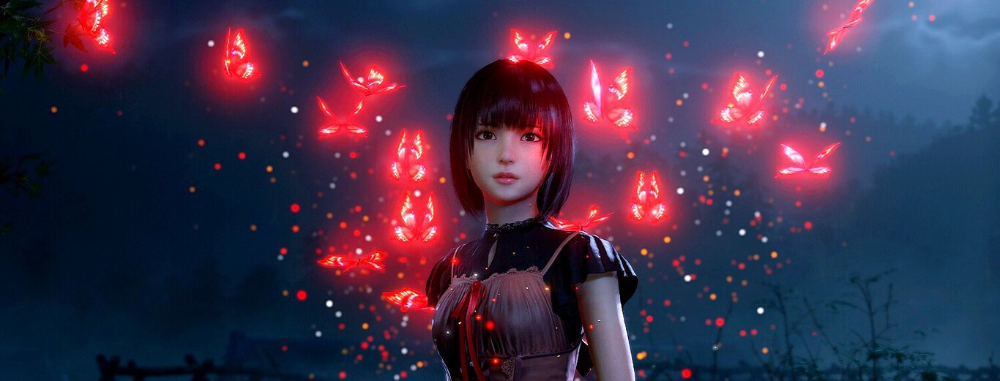
Genre et horreurLa Final Girl est le monstre
Le genre a besoin d'une femme pour avoir peur à sa place, et ce besoin dit beaucoup.
15 min -
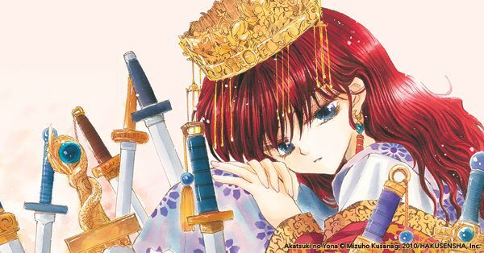
Combattantes I — shōjo et joseiGrandir, ou rendre les armes
On arme les filles à une seule condition : qu'elles ne grandissent jamais en armes.
25 min -
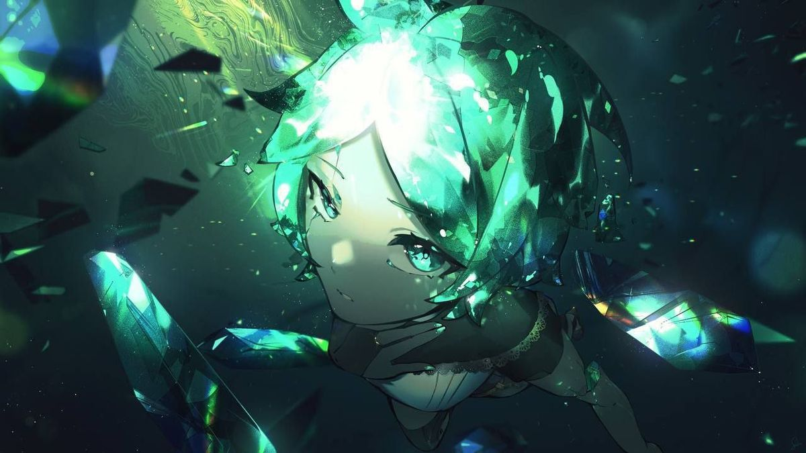
Combattantes II — seinen et shōnenNées ailleurs
La guerrière adulte est née hors du rayon des filles. La cage l'y avait précédée.
26 min -
 Sacrifice dans le manga
Sacrifice dans le mangaCorps offerts
Le corps qu'on sacrifie n'est presque jamais celui que l'histoire prétend sacrifier.
14 min
Éthique et fascination
Ce que nous accordons aux personnages qui nous plaisent, et ce que cette indulgence nous coûte comme lecteurs.
Mémoire et identité
Des récits où le souvenir est un matériau qu'on peut falsifier, rejouer ou perdre — et où la forme du jeu s'en mêle.
-
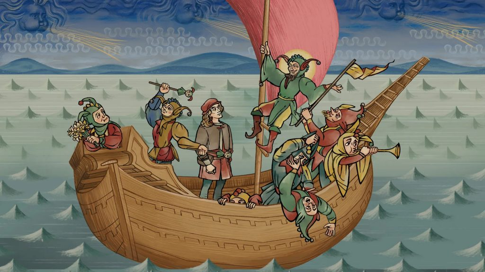
Pentiment — histoireLe palimpseste vivant
Un monde entier bascule, vu depuis la seule main qui sait encore l'écrire.
16 min -
Danganronpa 2 — simulation
Le jeu dans le jeu dans le jeu
On pleure une morte qui n'a jamais existé, dans un monde qui n'a jamais eu lieu.
16 min -
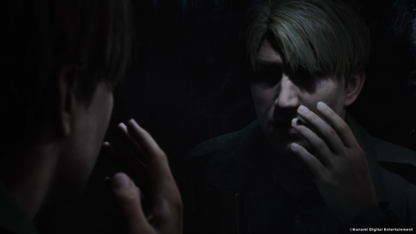
Silent Hill 2 RemakeLe brouillard a changé
Ce qu'une équipe a osé ajouter à un brouillard qu'on croyait déjà refermé.
13 min -
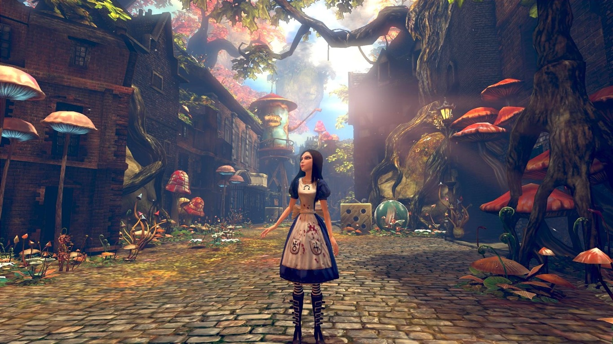
Alice Madness ReturnsLe pays des merveilles ne protège plus
Le seul refuge d'Alice se retourne, lui aussi, contre elle.
14 min
Regard et corruption
Quatre récits où ce qu'on voit est déjà une complicité, et où le point de vue est la vraie machine du récit.
-
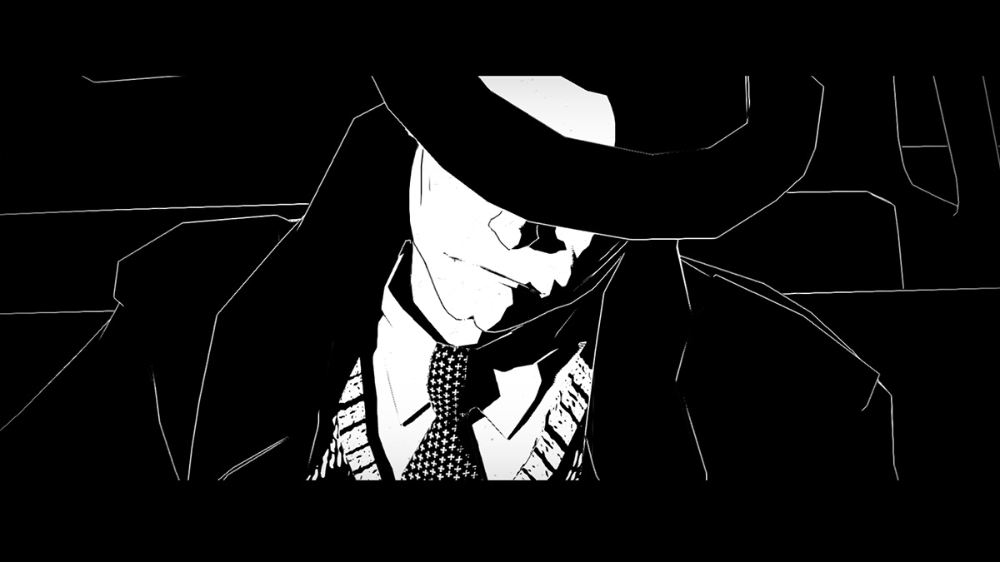
White Night — film noirL'allumette et le loup
Le narrateur est le tueur. Le noir et blanc, lui, ne mentira jamais.
12 min -
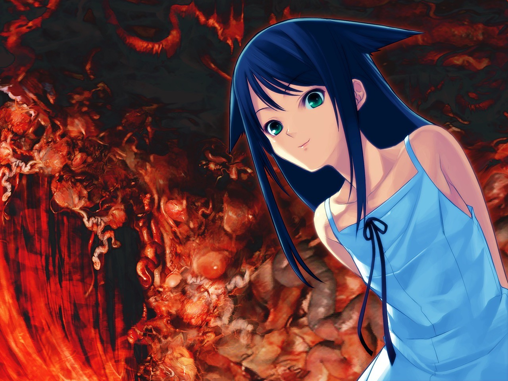
Saya no Uta — désirCe que voit Fuminori
Le monde devient magnifique exactement au moment où il devrait faire peur.
13 min -
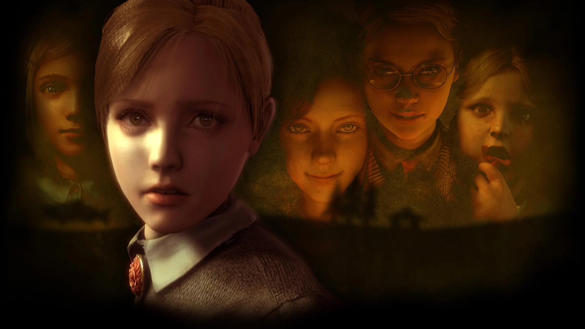
Rule of Rose — mémoireLa règle de la rose
Ce que les enfants font aux enfants : hiérarchies, dettes et mémoire brisée.
15 min -
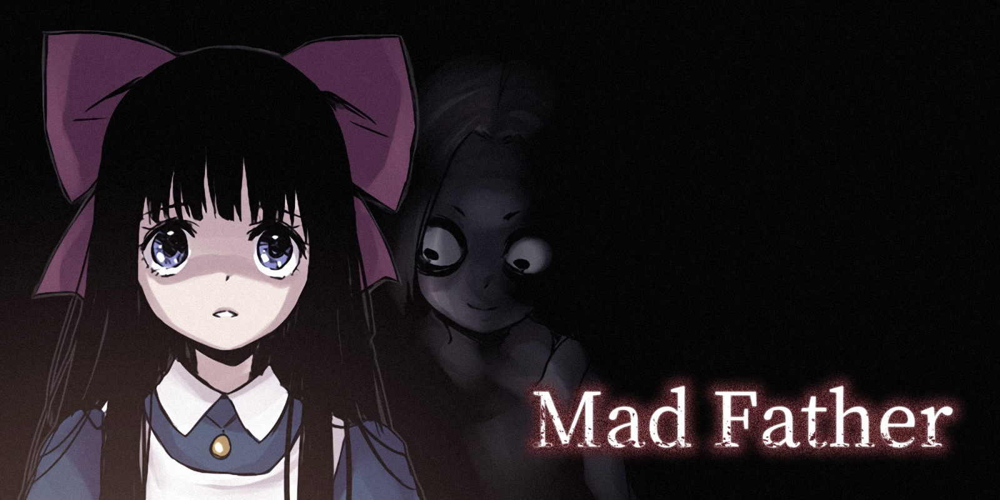
Mad Father — héritageLa poupée qui dit je t'aime
Aya aimait son père. Elle ne savait pas encore ce qu'elle était pour lui.
8 min
Fiction interactive
Ce que j'écris plutôt que ce que je lis.